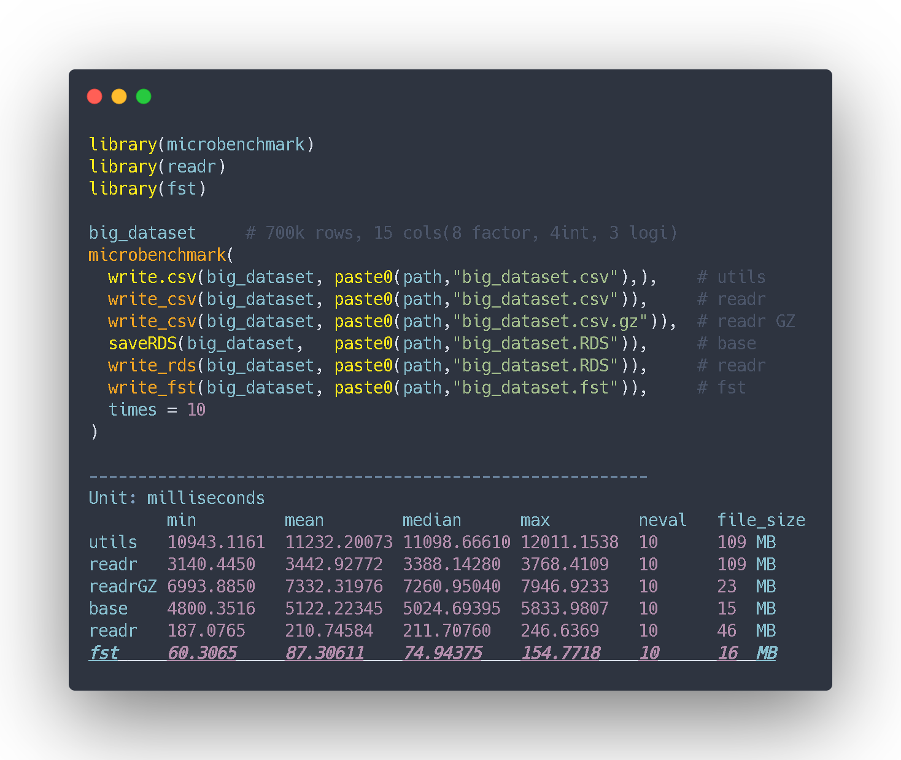

¡Aumenta la velocidad de tus scripts de R!. Optimiza la lectura, escritura y almacenamiento de modelos y grandes datasets con el paquete FST
Velocidad imbatida y almacenaje óptimo, Es FST! x100 más rápido que write.csv()

¿Quieres guardar tu modelo de Deep Learning o un gran dataset? A continuación te mostramos la manera que hemos encontrado de optimizar la lectura, la escritura y almacenaje de ficheros con el paquete FST. Si incorporar un paquete a tu environment no te supone un gran problema, te lo recomendamos.
En la repo del paquete hay un perqueño benchmark. Queremos comprobarlo por nosotros mismos y vamos a comparar su rendimiento con las funciones que hasta hoy eran parte de nuestra caja de herramientas de R para la lectura y escritura de ficheros en projectos de datos. Veamos:
library(microbenchmark)
library(readr)
library(fst)
microbenchmark(
write.csv(big_dataset, paste0(path,"big_dataset.csv"),), # utils
write_csv(big_dataset, paste0(path,"big_dataset.csv")), # readr
write_csv(big_dataset, paste0(path,"big_dataset.csv.gz"),), # readr GZ
saveRDS(big_dataset, paste0(path,"big_dataset.RDS")), # utils
write_rds(big_dataset, paste0(path,"big_dataset.RDS")), # readr
write_fst(big_dataset, paste0(path,"big_dataset.fst")), # fst
times = 10
)## Unit: milliseconds
## min mean median max neval file_size
##utils 10943.1161 11232.20073 11098.66610 12011.1538 10 109 MB
##readr 3140.4450 3442.92772 3388.14280 3768.4109 10 109 MB
##readrGZ 6993.8850 7332.31976 7260.95040 7946.9233 10 23 MB
##base 4800.3516 5122.22345 5024.69395 5833.9807 10 15 MB
##readr 187.0765 210.74584 211.70760 246.6369 10 46 MB
"fst 60.3065 87.30611 74.94375 154.7718 10 16 MB"## [1] "fst 60.3065\t\t 87.30611 74.94375 154.7718 10 16 MB"¡Wow! Los resultados son impresionantes, incluso mejores que los expuestos en la web de los creadores.
Podemos apreciar una mejora x3 y x50 en el performance comparado con las funciones readr::write_rds() y base R saveRDS()!
Una incremento increible de un x100 performance entre fst y las funciones que trabajan con csv y que anteriormente utilizábamos, aunque realmente esta no es una comparación del todo justa al tratarse de dos extensiones completamente diferentes (csv y bin).
¿Y tú? ¿Estás pensando en incluir FST al toolbox de tu proyecto también?
Carlos Vecina
Data Scientist & TechLead en Bankinter
Data Scientist & TechLead en Bankinter | AI & Data Science para aportar valor en la empresa